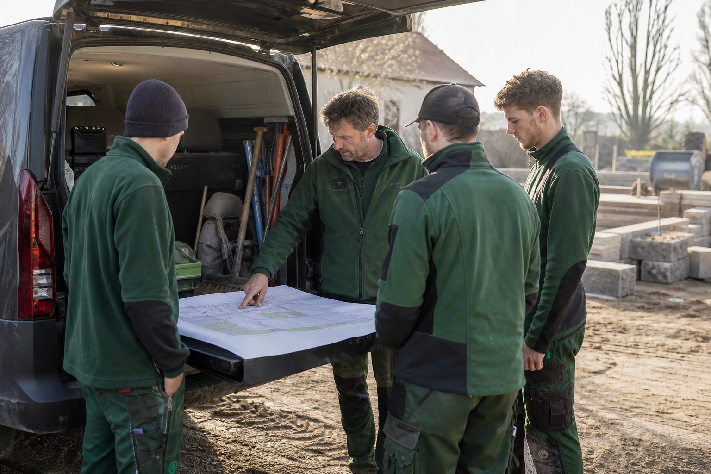

Der Vorarbeiter: Die wichtigste Führungskraft, die kaum ein Betrieb ausbildet
Er entscheidet, ob eine Kolonne funktioniert, ob der Azubi bleibt und ob die Baustelle Ertrag bringt. Trotzdem wird die Rolle meist nach Dienstalter vergeben und ohne Vorbereitung übertragen. Was ein Vorarbeiter braucht – und was der Betrieb ihm schuldet.

In einem Betrieb mit vier Kolonnen gibt es vier Menschen, die täglich über Qualität, Tempo, Sicherheit und Stimmung entscheiden. Der Inhaber sieht jede Baustelle zweimal die Woche, die Bauleiterin einmal am Tag. Der Vorarbeiter ist zehn Stunden dort. Er verteilt die Arbeit, er zeigt dem Azubi den Fugenschnitt, er entscheidet, ob um 15 Uhr noch die letzte Reihe gelegt wird oder ob es morgen weitergeht – und er ist derjenige, mit dem der Facharbeiter im Winter über Kündigung nachdenkt, oder eben nicht.
Wie die Rolle vergeben wird
In den meisten Betrieben wird Vorarbeiter, wer am längsten da ist und am besten pflastert. Beides sind Qualifikationen für den Facharbeiter, nicht für die Führung. Der beste Pflasterer hat oft wenig Geduld mit denen, die es noch lernen; der Dienstälteste hat manchmal wenig Interesse an Verantwortung, nimmt sie aber, weil sie mit Geld verbunden ist. Das Ergebnis sind Kolonnen, in denen der Vorarbeiter selbst am meisten arbeitet und am wenigsten führt.
Die Alternative kostet ein Gespräch: Wer will die Rolle? Wer kann erklären, zuteilen, entscheiden, auch wenn es unbequem ist? Ein Facharbeiter mit fünf Jahren Erfahrung, der Freude daran hat, den Azubi anzuleiten, ist der bessere Kandidat als der beste Maschinenführer mit zwanzig.
Was der Vorarbeiter tatsächlich tut
Planen. Morgens auf dem Hof: Was wird heute gebaut, mit welchem Material, in welcher Reihenfolge, wer macht was. Zehn Minuten am Fahrzeug sparen zwei Stunden auf der Baustelle.
Anleiten. Zeigen, kontrollieren, korrigieren – ohne es selbst zu machen. Die schwerste Umstellung für Facharbeiter, die schneller sind als jeder Azubi.
Sichern. Der Vorarbeiter ist auf der Baustelle der Aufsichtführende im Sinne der Unfallverhütung. Die DGUV Vorschrift 1 erlaubt es dem Unternehmer, Pflichten schriftlich auf ihn zu übertragen: Unterweisung, Kontrolle der Schutzausrüstung, Absperrung, Verkehrssicherung. Wer die Pflichten überträgt, muss die Person dafür befähigen – und das steht in derselben Vorschrift.
Melden. Material fehlt, der Plan passt nicht, der Kunde will etwas anderes, der Azubi hat ein Problem. Der Vorarbeiter ist die Verbindung zwischen Baustelle und Büro, und wenn sie nicht funktioniert, erfährt der Betrieb vom Nachtrag erst bei der Schlussrechnung.
Was der Betrieb ihm schuldet
Geld. Der Tarif sieht für Vorarbeiter eine eigene Lohngruppe zwischen Facharbeiter und Baustellenleiter vor. Wer die Rolle überträgt, ohne sie zu bezahlen, bekommt einen Facharbeiter mit Zusatzaufgaben – und den Ärger der Kolonne, die sieht, dass Verantwortung nichts wert ist.
Vorbereitung. Ein Tag Einweisung durch die Bauleitung, bevor die erste Kolonne übernommen wird: Baustellendokumentation, Stundenzettel, Materialabruf, Umgang mit Kunden, Unterweisung. Bildungsträger der Branche bieten mehrtägige Vorarbeiterlehrgänge an; die DEULA und die Bildungswerke der Verbände haben sie im Winterprogramm.
Rückendeckung. Wenn der Vorarbeiter entscheidet, die Baustelle wegen Frost abzubrechen, und der Inhaber ihn vor der Kolonne korrigiert, hat er die Rolle verloren. Korrekturen finden unter vier Augen statt.
Zeit. Ein Vorarbeiter, der genauso viel produzieren muss wie seine Leute, führt nicht. In der Kalkulation muss die Führungszeit stehen – eine Stunde am Tag für eine Kolonne von vier.
Warum das die beste Bindungsmaßnahme ist
Jede zweite Kündigung in Deutschland geht inzwischen vom Mitarbeiter aus. Im GaLaBau nennen Wechsler selten den Lohn als ersten Grund, sondern die Kolonne, den Ton, das Gefühl, nicht gesehen zu werden. All das entsteht auf der Baustelle, nicht im Büro. Wer seine Vorarbeiter auswählt, vorbereitet, bezahlt und deckt, arbeitet an der Stelle, an der Personal gehalten wird – und nicht an der Stellenanzeige, die danach nötig ist.
Quellen
- DGUV Vorschrift 1: Grundsätze der Prävention, § 13 Pflichtenübertragung (schriftliche Übertragung von Unternehmerpflichten an Aufsichtführende) – publikationen.dguv.de/regelwerk/dguv-vorschriften/
- Institut der deutschen Wirtschaft: Arbeitnehmer kündigen zunehmend selbst, 22. April 2025 (Eigenkündigungen 52 Prozent aller Beendigungen) – www.iwkoeln.de/studien/holger-schaefer-arbeitnehmer-kuendigen-zuneh...
- B_I galabau: Tarif im GaLaBau 2025/2026 – Lohngruppen (Vorarbeiter zwischen Facharbeiter und Baustellenleiter) – bau.bi/galabau/nachrichten/tarifvertrag-so-hoch-sind-die-loehne-und...
Kommentare
Noch keine Kommentare. Schreiben Sie den ersten.
Mehr aus Betrieb & Personal
Zum Ressort
Azubis für 2027: Drei Hebel, die Betriebe jetzt im Herbst umlegen
Die Ausbildungsverträge für den Start im August 2027 werden im Winter geschlossen. Wer im Herbst Praktika anbietet, in der Berufsschule sichtbar ist und die Eltern mitdenkt, hat im März unterschriebene Verträge.

Winterdienst-Personal: Bereitschaft regeln, bevor der erste Schnee fällt
Winterdienstverträge werden im September unterschrieben, die Bereitschaft der Mitarbeiter im November improvisiert. Was Rufbereitschaft von Bereitschaftsdienst unterscheidet, welche Ruhezeiten auch nachts gelten und wie Betriebe die Einsätze vergüten.

Die erste Woche: Wie neue Azubis ankommen – und was in den ersten Tagen entscheidet, ob sie bleiben
Anfang August beginnen im GaLaBau die Ausbildungsverhältnisse. Die Abbrüche fallen meist in den ersten Monaten. Was das Gesetz für Jugendliche verlangt, was der Betrieb vorbereiten sollte und warum der Pate wichtiger ist als der Ausbilder.